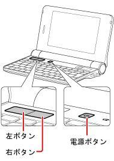
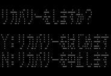
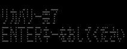

步驟如下：
1. 下載https://github.com/steward-fu/website/releases/download/pc-z1/recovery.sh
2. 插入AC電源並且關閉電源管理員的AC待命模式
3. 連接無線網路(檔案大小約1GB)
4. 將MicroSD裡面的recovery.sh程式複製到桌面並執行
5. 回復原廠Flash Memory程式製作完畢後，將Netwalker PC-Z1機器關機
6. 按住Netwalker PC-Z1機器的滑鼠左鍵 + 滑鼠右鍵 + 電源鍵(出現Sharp Logo後就可以先放開電源鍵)


